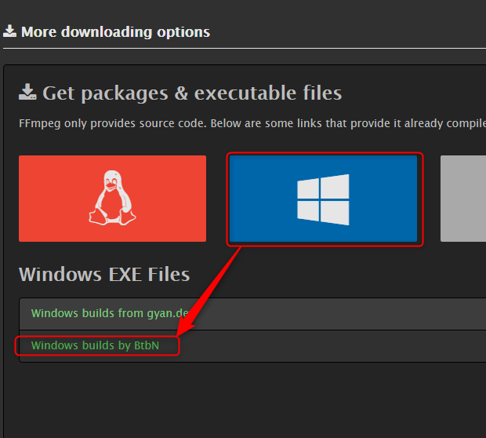
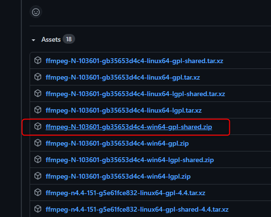

WinPythonのコンソール | WinPythonにパッケージをインストール
WinPython Command Prompt.exeがWinPythonのコンソールになっている。このコンソールから各種パッケージをpipコマンドでインストールできる。
（例）WinPython Command Prompt.exeの場所
C:\Users\user\python3_8\WPy64-3850\WinPython Command Prompt.exe
WinPythonにOpenCVをインストール
- WinPythonに含まれるツール「WinPython Command Prompt.exe」を起動してコンソールを起動する。
-
OpenCVをpipコマンドでインストール
pip install opencv-python
- 以上でインストール完了。
-
インストールされているか確認
「python」コマンドを実行してPython実行モードにし、「import cv2」を実行。
エラーが表示されなければOK(何も出なければOK)。

ffmegのインストール
FFmpegは動画と音声を記録・変換・再生するためのフリーソフトウェアとのこと。 GUIを持たず、コマンドラインから操作する。 つまりプログラムに組み込んで使う。-
2021年9月時点のダウンロード元。
https://ffmpeg.org/からファイル群をダウンロードできる。
ffmpeg-N-103601-gb35653d4c4-win64-gpl-shared.zipをダウンロードする。
  -
「ffmpeg-N-103601-gb35653d4c4-win64-gpl-shared.zip」を適当な解凍すると以下のファイル群を入手できる。
ファイル群avcodec-59.dll avdevice-59.dll avfilter-8.dll avformat-59.dll avutil-57.dll ffmpeg.exe ffplay.exe ffprobe.exe postproc-56.dll swresample-4.dll swscale-6.dll
-
これらのファイル群をpyファイルの存在するディレクトリに丸ごと放り込む。
avcodec-59.dll avdevice-59.dll avfilter-8.dll avformat-59.dll avutil-57.dll ffmpeg.exe ffplay.exe ffprobe.exe postproc-56.dll sample.py swresample-4.dll swscale-6.dll
-
WinPythonのコマンドラインツール「WinPython Command Prompt.exe」を開き、下記コマンドを実行し、ffmpegをインストール
pip install ffmpeg
例
C:\Users\user\WinPython\WPy64-3950\scripts>pip install ffmpeg Collecting ffmpeg Downloading ffmpeg-1.4.tar.gz (5.1 kB) Building wheels for collected packages: ffmpeg Building wheel for ffmpeg (setup.py) ... done Created wheel for ffmpeg: filename=ffmpeg-1.4-py3-none-any.whl size=6084 sha256=d1cc1d2b21681f13264aeca8d45c5680bf94ee42783affac7a7de2bd7bd8d7dd Stored in directory: c:\users\user\appdata\local\pip\cache\wheels\1d\57\24\4eff6a03a9ea0e647568e8a5a0546cdf957e3cf005372c0245 Successfully built ffmpeg Installing collected packages: ffmpeg Successfully installed ffmpeg-1.4
- pyファイル上でpydubなどffmpegを利用したパッケージのインストールし、それらが動作すれば成功。
pipのアップデート
pip install --upgrade pip --user
設定データの読み込み | iniファイルなどから設定を読み込む | confg
main.py
from ConfigX import ConfigX
print ('設定データの読み込み | iniファイルなどから設定を読み込む | confg')
configX = ConfigX()
confs =configX.getConfigs('./config.txt')
print(confs)
ConfigX
# 設定データの取得
# auther kenji uehara
# version 1.0.0
# since 2021-11-5
class ConfigX:
def getConfigs(self, text_fn):
configs = {}
# 設定ファイルを読み込み
f = open(text_fn, 'r', encoding='UTF-8')
text_all = f.read()
f.close()
lines = text_all.split('¥n')
for line in lines:
if ('=' in line) == False: continue
field = self.__stringLeft(line, '=');
field = field.strip()
value = self.__stringRight(line, '=');
value = value.strip()
configs[field] = value
return configs
# 文字列を左側から印文字を検索し、左側の文字を切り出す
# @param string s 対象文字列
# @param $mark 印文字
# @return 印文字から左側の文字列
def __stringLeft(self, s, mark):
a =s.find(mark)
res = s[0:a]
return res
# 文字列を左側から印文字を検索し、右側の文字を切り出す。
# @param string s 対象文字列
# @param $mark 印文字
# @return 印文字から右側の文字列
def __stringRight(self, s, mark):
a =s.find(mark)
res = s[a+len(mark):]
return res
config.txt
#テスト設定ファイル animal = neko age = 16 power= https://amaraimusi.sakura.ne.jp/note_prg/a=123
出力
設定データの読み込み | iniファイルなどから設定を読み込む | conf
neko
16
https://amaraimusi.sakura.ne.jp/note_prg/a=123
{'animal': 'neko', 'age': '16', 'power': 'https://amaraimusi.sakura.ne.jp/note_prg/a=123'}
現在日時を取得 | datetime
import datetime
print ('Pythonの覚書：現在日時を取得 | datetime')
dt = datetime.datetime.now()
u = dt.strftime("%Y%m%d%H%M%S")
print(type(dt))
print(dt)
print(u)
Pythonの覚書：datetime <class 'datetime.datetime'> 2021-11-05 20:58:42.628284 20211105205842
PythonでSQLite3を扱う
print ('PythonでSQLite3を扱う')
import sqlite3
# データベースにアクセス、データベースファイルが存在しなければ生成しつつアクセス
dao = sqlite3.connect(
"test5.sqlite3", #データベースのファイル名
isolation_level=None, #Noneは自動コミットを表す
)
sql = """
CREATE TABLE nekos (
id INTEGER PRIMARY KEY AUTOINCREMENT,
neko_name VARCHAR(50),
neko_age INTEGER
);
"""
dao.execute(sql) #sql文を実行
dao.execute("INSERT INTO nekos(neko_name, neko_age) VALUES ('イッパイアッテナ', 12);")
# SELECT文の実行とデータ取得
res = dao.execute("SELECT * FROM nekos;")
#data = res.fetchone() # 1行だけ取得
data = res.fetchall() # すべての行を取得
print(data)
dao.close()
クラスの基本的な書き方とfrom,importによるクラスの読込について
ファイルとディレクトリの構成class_test.py(これをrunする) Animal(フォルダ) Dog.pyclass_test.py
from Animal.Dog import Dog # from フォルダ.クラスファイル名 import クラス名
batta = Dog()
batta.bark('臆病な犬')
class Dog:
# コンストラクタ
def __init__(self):
print('犬のコンストラクタ')
self.type_a = 'xxx' # publicメンバ
self.__type_b = '犬科' # privateメンバ
# publicメソッド
def bark(self, animal_name):
print(f'{animal_name}がほえる')
print(self.type_a) # メンバにアクセス
print(self.__type_b)
print(self.__work()) # 同クラス内のメソッドの呼び出し
# privateメソッド
def __work(self):
print('犬もあるけば棒にあたる')
犬のコンストラクタ 哺乳類A 犬科 臆病な犬がほえる 犬もあるけば棒にあたる
ディレクトリの階層が深い場合のインポート
ファイルとディレクトリの構成class_test.py(これをrunする) Animal(フォルダ) Insect(フォルダ) Batta.pyclass_test.py
from Animal.Insect.Batta import Batta
batta = Batta()
batta.jump('オンブバッタ')
class Batta:
def __init__(self):
print('バッタのコンストラクタ')
def jump(self, animal_name):
print(f'{animal_name}が跳ねる')
外部のディレクトリにあるクラスをimportする | 絶対パスを指定してクラスをインポート
import sys
sys.path.append("C:\\Users\\user\\git\\python_sample\\a001\\Animal\\Insect\\")
from Batta import Batta # from クラスファイル名 import クラス名
bata = Batta()
bata.jump('トノサマバッタ')
class Batta:
def __init__(self):
print('バッタのコンストラクタ')
def jump(self, animal_name):
print(f'{animal_name}が跳ねる')
空の変数の宣言→value1 = None
whileやifなど空の変数を宣言せねばならないときに。もちろんオブジェクト型、プリミティブ型のどちらにも対応。
value1 = None